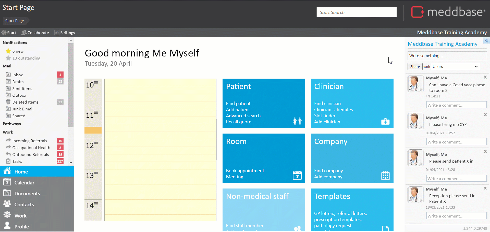

6. Click Next to run the query.
7. Click Save.
8. In the Select report name dialogue that appears, add a Report name and click OK*.
* To organise your reports into folders, you can use the following pattern: Folder name/Report name, e.g. Test reports/Simple report on Patient Demographics.
Publishing a report
Once a report is finished and saved, it can be published, so that other Meddbase users can utilize it.
To publish a saved report the following steps apply:
1. From the Start Page navigate to Admin > Report management.
2. Expand the relevant folder on the left-hand pane (Test reports in this case).
3. Click on the report you wish to publish and hit Publish report.
4. Assign a name the report will be published under (you can use the same name the report was saved under).
The report will now be available from the Start Page under the Reports tile. A Meddbase user can now navigate to that section, select the published report and run the query.
The results can be exported to Excel for further analysis by clicking this icon 
